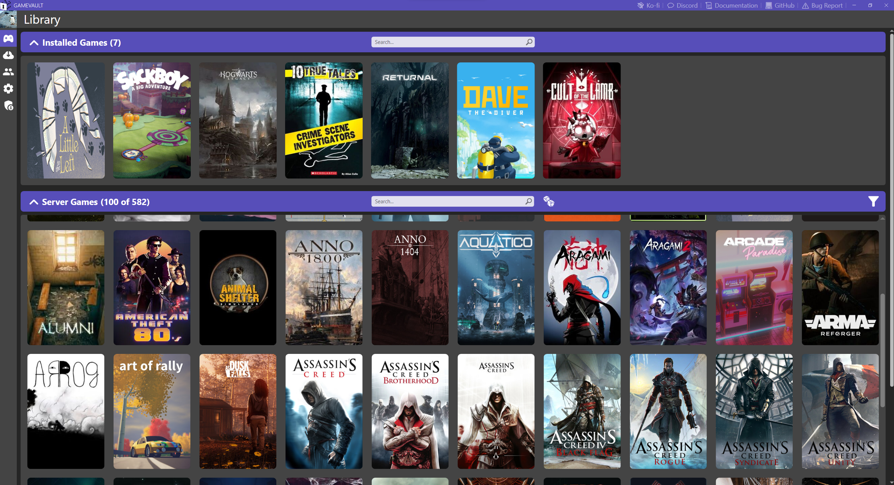

Gamevault
Gamevault est une plateforme de jeu innovante offrant une alternative auto-hébergée et open-source aux plateformes de jeu populaires. Elle vous permet de profiter de jeux sans DRM, en version portable, stockés sur un serveur de fichiers de manière organisée.
Pour commencer, il vous faudra installer l'application Gamevault via le Microsoft Store
Pour accéder à la liste de nos jeux, il vous faudra renseigner l'url de notre serveur (https://gamevault.onode.fr) dans le programme Gamevault et créer votre compte personnel. L'inscription n'est possible qu'avec l'adresse mail du compte qui vous a permis de venir ici.
Pensez, comme d'habitude, à utiliser un mot de passe unique à notre site et différent de votre mot de passe principal, pour plus de sécurité.